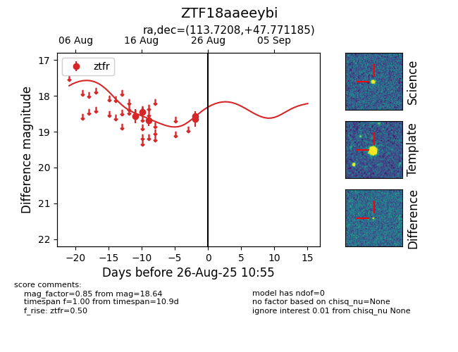

Target ZTF18aaeeybi at 2025-08-26 10:55, see:
FINK: fink-portal.org/ZTF18aaeeybi
Lasair: lasair-ztf.lsst.ac.uk/objects/ZTF18aaeeybi
ALeRCE: alerce.online/object/ZTF18aaeeybi
alt names
ZTF18aaeeybi (ztf,fink)
coordinates:
equatorial (ra, dec) = (113.7208,+47.77118)
galactic (l, b) = (170.6008,+26.76628)
photometry
last ztfr=18.64
5 ztfr detections
